От императорских указов XVIII века до современных исследовательских центров: эволюция высшего образования, структурные трансформации и региональные научные школы
История университетов в России неразрывно связана с процессами модернизации государства и интеграцией в европейское научное пространство. Учреждение Московского университета в 1755 году, чему послужил указ императрицы Екатерина II, стало ответом на запрос империи в собственных кадрах: до этого российская элита вынуждена была получать образование за границей, преимущественно в Германии и Франции.
Инициатива М.В. Ломоносова и И.И. Шувалова закрепила принцип доступности высшего образования для разночинцев, что стало революционным для сословного общества. Уже к концу XVIII века университет превратился не только в образовательный, но и в культурно-просветительский центр, вокруг которого формировались научные общества, библиотеки и типографии.
В XIX веке система прошла через несколько уставных реформ (1804, 1835, 1863, 1884), каждая из которых отражала колебания государственной политики между автономией академического сообщества и усилением административного контроля. Несмотря на политические ограничения, российские университеты выпустили поколение учёных, чьи открытия вошли в золотой фонд мировой науки.
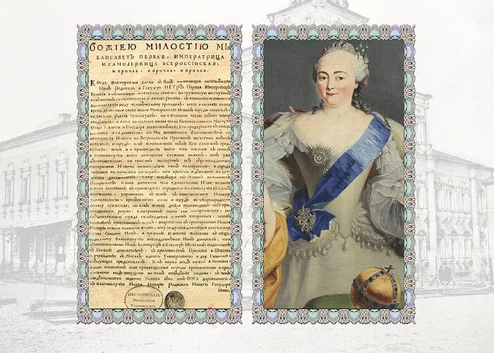
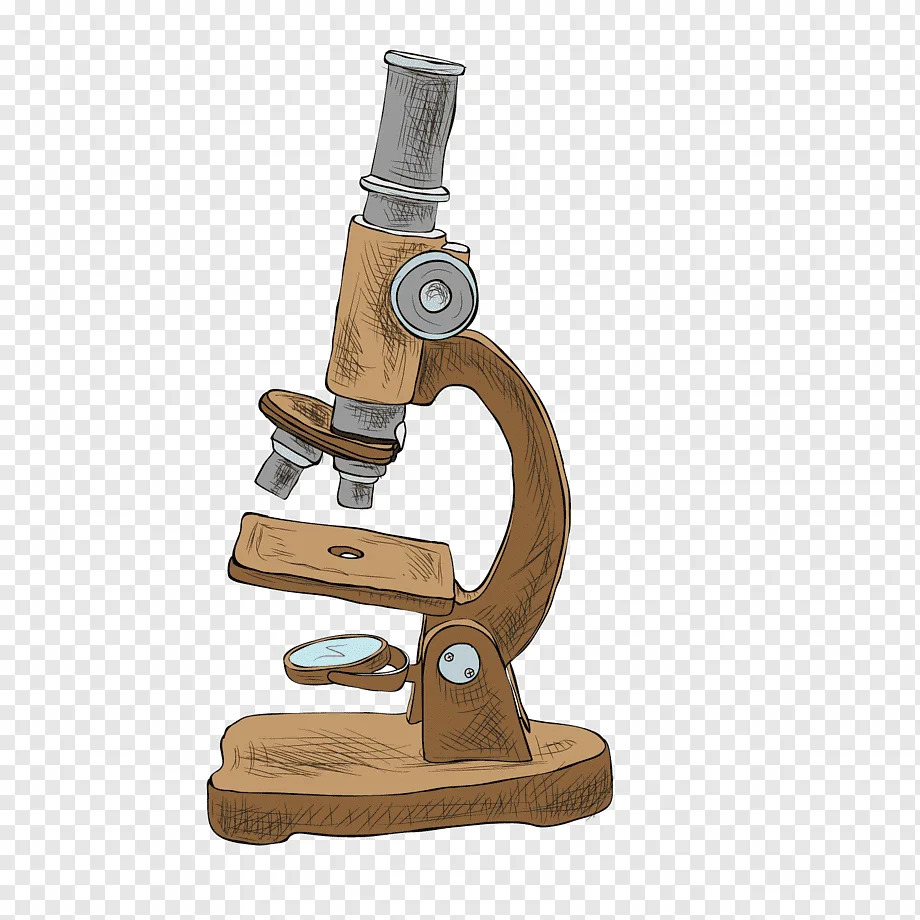
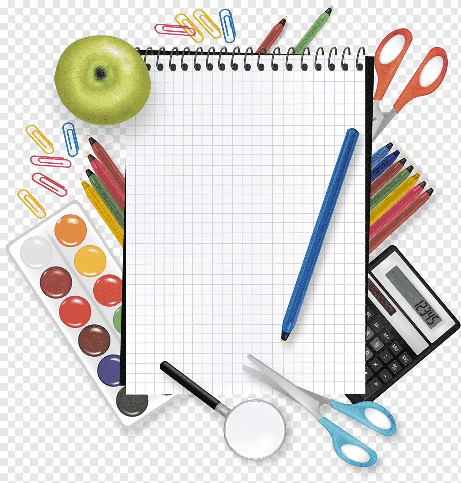
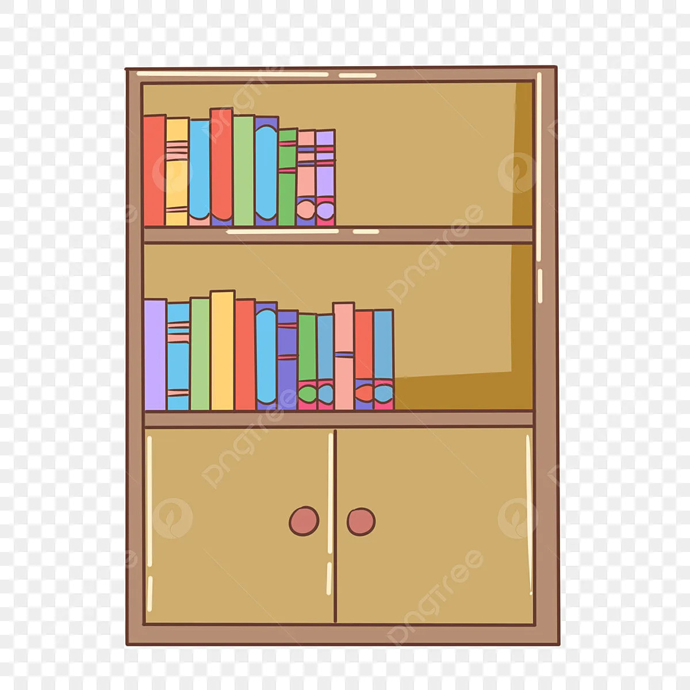
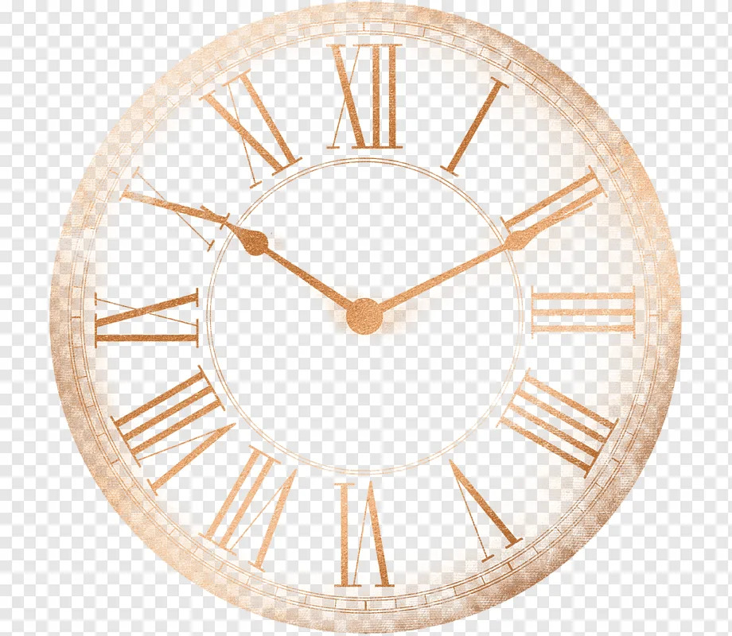
Как менялась архитектура высшего образования под влиянием эпох, государственных реформ и научных запросов
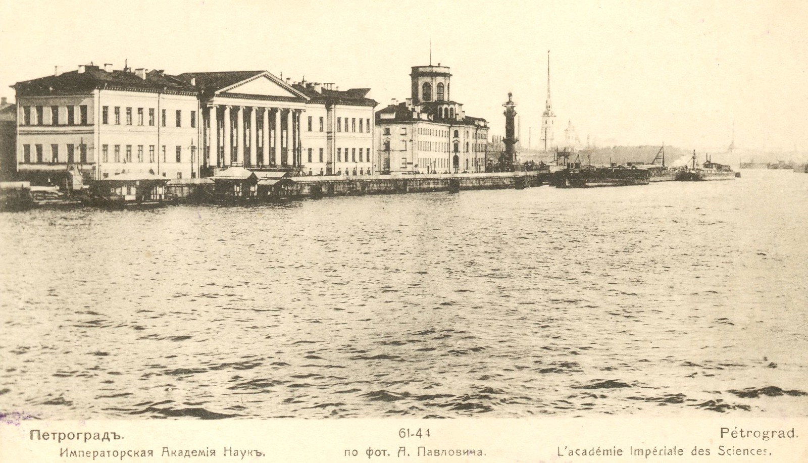
images/02_image.jpg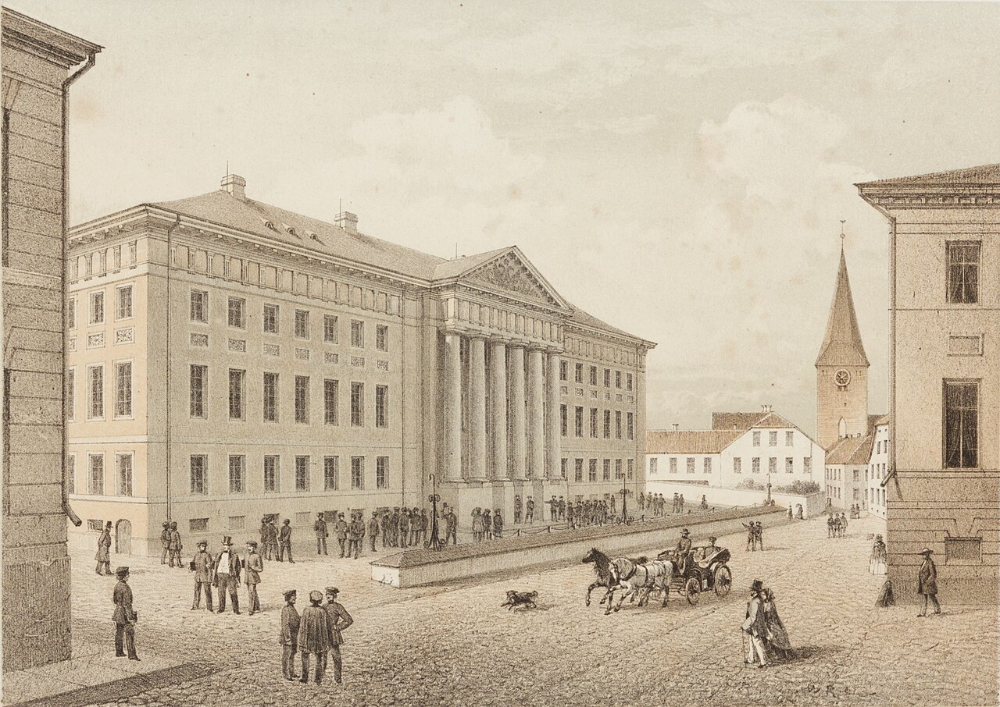
images/03_image.jpg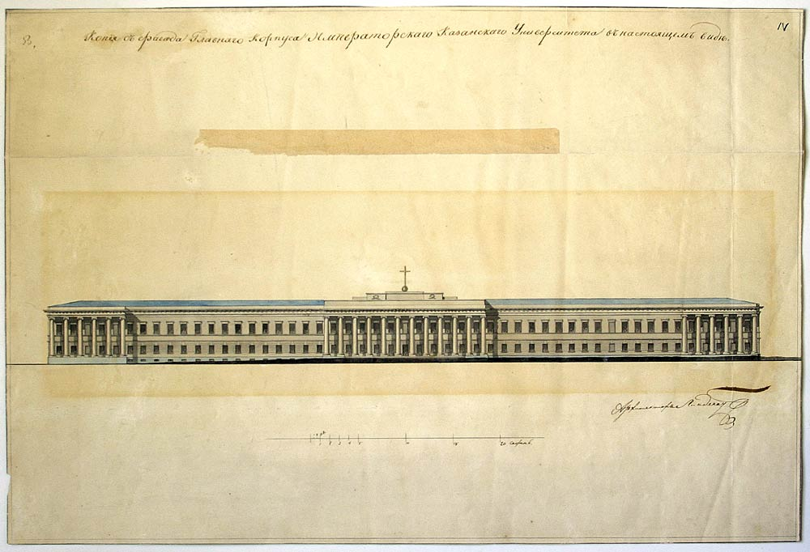
images/04_image.jpg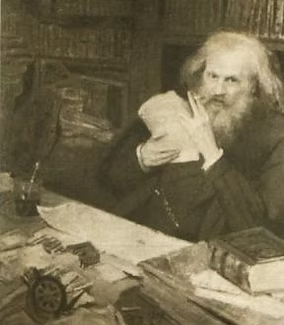
images/05_image.jpg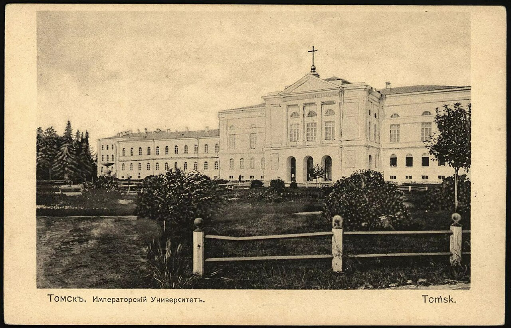
images/06_image.jpg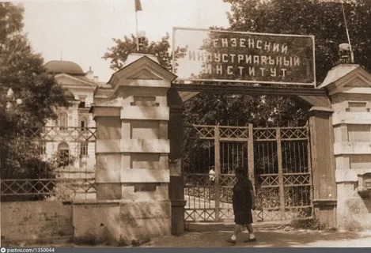
images/07_image.jpg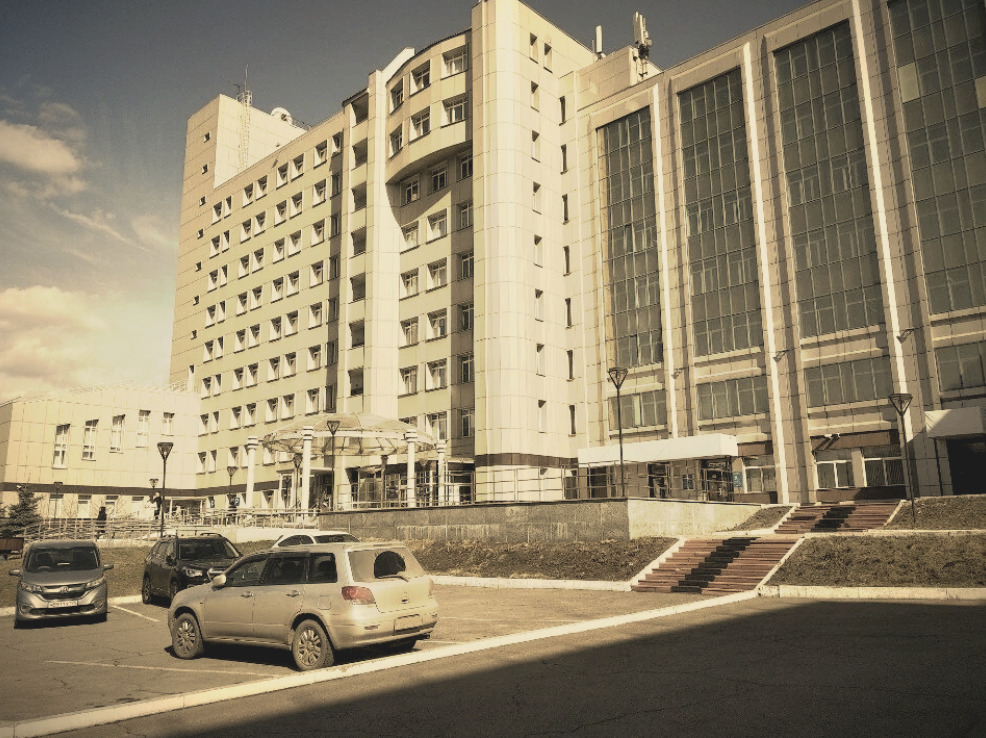
images/08_image.jpg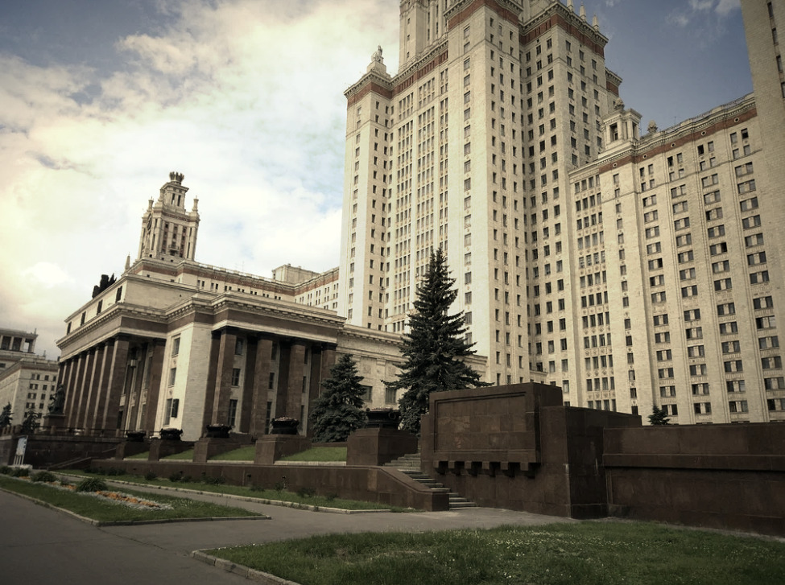
images/09_image.jpgКак устроена современная система высшего образования в РФ
Современная российская система опирается на многоуровневую модель, закреплённую Федеральным законом «Об образовании в Российской Федерации». Каждый уровень предполагает чёткие компетенции и сроки обучения.
Университет функционирует как автономное юридическое лицо с внутренним разделением на структурные подразделения, каждое из которых отвечает за определённый образовательный или научный контур.
От педагогического института к ведущему научно-образовательному центру Западной Сибири
Тюменский государственный университет (ТюмГУ) ведёт свою историю от Тюменского педагогического института, основанного в 1930 году. Статус университета был получен в 1993 году, что позволило расширить спектр направлений подготовки и усилить научную составляющую деятельности.
Университет традиционно играет ключевую роль в кадровом обеспечении нефтегазовой отрасли Западной Сибири, а также в развитии педагогики, биологии, гуманитарных наук и цифровых технологий. В 2010-е годы ТюмГУ вошёл в число опорных вузов, а впоследствии стал участником программы «Приоритет 2030».
Научная школа ТюмГУ известна исследованиями в области криологии, экологии Севера, археологии Западной Сибири и цифровой экономики. Университет активно развивает кластерный подход, объединяя академические подразделения с промышленными партнёрами региона.
За более чем 90 лет существования вуз подготовил десятки тысяч специалистов, среди которых выдающиеся учёные, государственные деятели, деятели культуры и спорта.
Основоположник системного подхода к развитию высшего образования в Тюменской области. Под его руководством пединститут трансформировался в многопрофильный университет.
Выпускники факультета геологии и географии внесли ключевой вклад в открытие и освоение месторождений Западной Сибири, сформировав научную базу отечественной нефтегазовой промышленности.
Среди выпускников — заслуженные учителя РФ, авторы учебников, поэты и прозаики, чьи произведения вошли в антологии сибирской литературы. Университет продолжает традиции подготовки кадров для образовательной и культурной сфер.
Куда движется система высшего образования в России
Внедрение LMS-платформ, цифровых кафедр, виртуальных лабораторий и ИИ-ассистентов. Переход к гибридным форматам обучения и созданию единых образовательных экосистем.
Фокус на прикладных исследованиях, технологическом предпринимательстве и коммерциализации разработок. Университеты становятся ядрами инновационных кластеров.
Усиление роли вузов как драйверов регионального развития. Программы целевой подготовки, сотрудничество с предприятиями и адаптация учебных планов под локальные рынки труда.
«Университет — это не здание, не бюджет, не дипломы. Это живая среда, в которой рождается мысль, способная изменить будущее»
Подборка материалов, раскрывающих ключевые аспекты развития университетской системы России
Хронология от XVIII века до постсоветской трансформации. Анализ уставов, реформ и роли вузов в формировании национальной идентичности.
Организационно-управленческая модель: факультеты, институты, кафедры, научные центры. Различия между классическими, федеральными и исследовательскими университетами.
Выдающиеся учёные, ректоры и выпускники Тюменского государственного университета. Их вклад в геологию, нефтяную отрасль, педагогику и культуру Западной Сибири.
Материалы подготовлены на основе публикаций из рецензируемых журналов. Ссылки ведут на прямой поиск в CyberLeninka для гарантированного доступа к полным текстам.